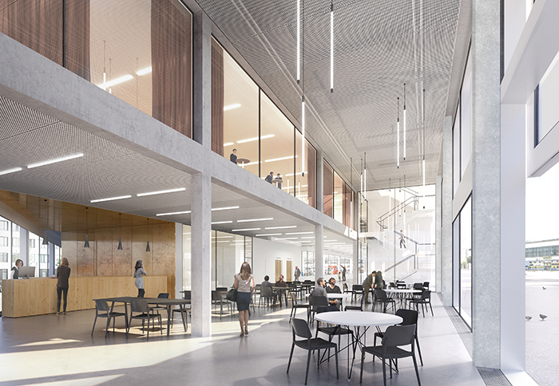
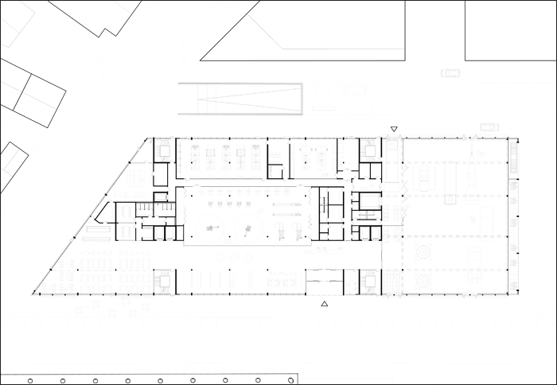

Projekt: INNOCAMPUS BIEL, 3. Preis








Projekt: INNOCAMPUS BIEL, 3. Preis
Ort: Biel (BE)
Bauherrschaft: Switzerland Innovation Park Biel/Bienne, Innocampus AG, Nidau-Biel
Program: Labore, Büro, Werkhallen, diverse öffentliche Nutzungen
Gebäudekosten: 38’000’000 CHF
Datum: 2016
Typ: Offener Wettbewerb, 3. Rang
Team: NYX architectes, Basler Hoffmann AG Zürich (Bauingenieur), TPAG AG, Biel (Haustechnik), Prona AG, Biel (Energie), ARO Plan AG, Oberägeri (Laborplanung)
Bilder: Play-Time